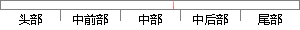

的大小意味着暴露组的死亡率是对照组死亡率的多少倍。
片段位置图

相似结果|
1
原句片段：的大小意味着暴露组的死亡率是对照组死亡率的多少倍。
相似片段 1：RR值表明暴露组发病率或死亡率是对照组发病率或死亡率的多少倍,说明暴露组发病或者死亡的危险性是非暴露组的倍数。由于病例对照研究中无法计算率,这也解释了为什么...
相似片段 2：相对危险度表明暴露组发病率或死亡率是对照组发病率或死亡率的多少倍。说明暴露组发病或者死亡的危险性是非暴...
相似片段 3：RR=暴露组累积发病率(或死亡率)/对照组累积发病率(或死亡率)相对危险度表明暴露组发病率或死亡率是对照组发病率或死亡率的多少倍.说明暴露组发病或者死亡的危险...
相似片段 4：相对危险度表明暴露组发病率或死亡率是对照组发病率或死亡率的多少倍。说明暴露组发病或者死亡的危险性是非...
相似片段 5：相对危险度表明暴露组发病率或死亡率是对照组发病率或死亡率的多少倍。说明暴露组发病或者死亡的危险性是非暴露组的倍数。RR值越大,表明暴露的效应越大,暴露与结局...
|
※ 片段修改建议 ※
近似词参考：- 大小：巨细
- 暴露：表露 露出 袒露
系统自动生成语句：的巨细意味着表露组的死亡率是对照组死亡率的多少倍。
注：本片段修改建议为系统自动生成，仅供参考。